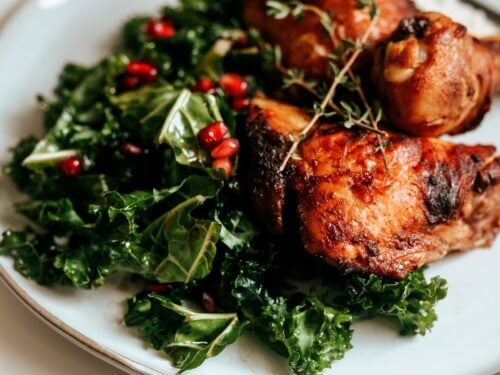

Quail Mobile

A Southern tradition, from field to table.
Description of the dish:
Ingredients
- 5 bobwhite quail
- 2 bunches of collard greens
- 1 onion
- 1 cup of vegetable broth
- 1/2 teaspoon red pepper flakes
- etc...
Steps
- Using kitchen shears or a knife, cut out the backbones of the quail.
- Heat the olive oil in a large, lidded pot like a Dutch oven. Salt the quail well and brown them in the oil, removing them to a bowl as they brown.
- Add the onion and celery and sauté until translucent, but not browned. Add the garlic cloves, the quail back into the pot along with any juices that have accumulated in the bowl, the oregano and the wine.
- Take the pot out of the oven and add the artichoke hearts, black olives and capers, if using. If the quail are not yet tender, which might be the case with wild birds, cover the pot and return to the oven until they are.
- etc...